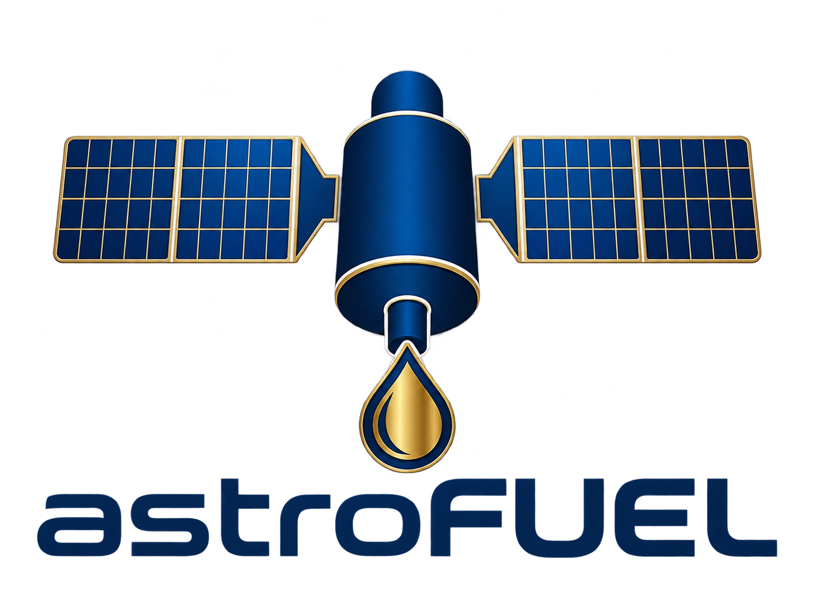
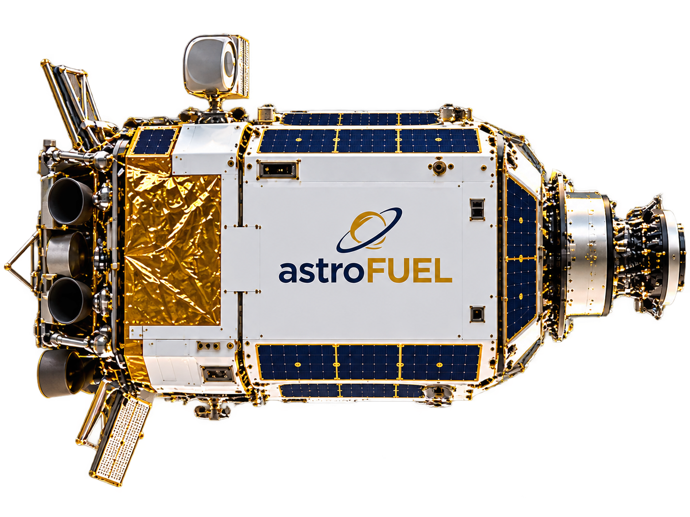
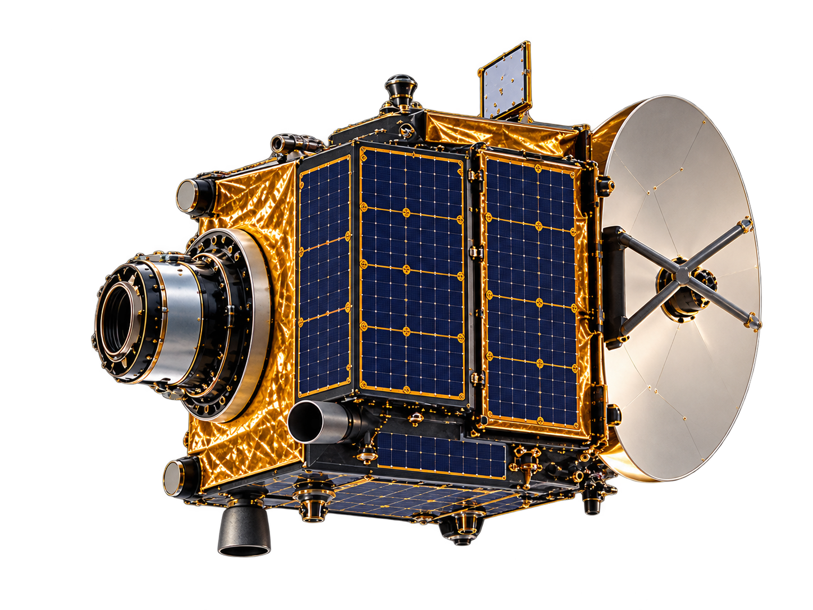
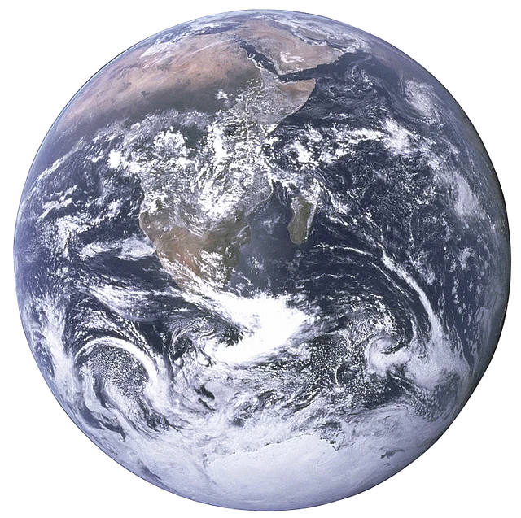

Project Manager
Project planning, coordination between engineering areas, milestones and deliverables.

Fueling the next generation of space missions.
DISCOVER OUR MISSIONSatellite operations often end when onboard propellant is depleted. Lázaro is astroFUEL's first conceptual mission: an orbital servicing spacecraft designed to deliver xenon to client satellites and support the extension of their operational lifetimes.
The proposed system combines xenon storage, rendezvous, docking and in-orbit transfer. Its reference operating orbit is 50 km above nominal GEO.
AN ACADEMIC CONCEPT UNDER DEVELOPMENT · NOT AN OPERATIONAL SERVICE
Designed to store, transport and transfer xenon, enabling a new generation of orbital servicing missions.
Follow the approach, docking and xenon transfer as you scroll.

astroFUEL
CLIENT SPACECRAFTThe servicing spacecraft closes the relative distance.
Explore the key stages of Mission Lázaro, from launch to in-orbit servicing.
Following launch, Lázaro enters an initial geostationary transfer orbit (GTO). Subsequent maneuvers raise its apogee and establish the target circular orbit 50 km above GEO.
CLIENTS ALTITUDE
50 km above nominal GEO
Scroll to follow the spacecraft through four mission stages.
The spacecraft is injected into an inclined transfer orbit.
SCROLL TO CONTINUEIllustrative projection, not to scale. The 50 km offset is exaggerated; final maneuver sequencing is subject to mission analysis.
The spacecraft operates 50 km above nominal geostationary altitude. Scroll to follow its path around Earth. Diagram not to scale.

The preliminary Mission Requirements Document defines the capabilities and constraints of the astroFUEL orbital refueling spacecraft.
The spacecraft shall be capable of docking with standard interfaces intended for future satellite refueling operations and safely undocking from the client spacecraft after refueling.
The spacecraft shall be capable of automatically aborting an approach or docking maneuver if an unsafe condition is detected.
The spacecraft shall be capable of refueling a wide range of client satellites operating in different orbits, with different configurations, types and sizes.
The spacecraft shall perform approach maneuvers accurately and safely, without entering GEO slots other than that of the client spacecraft.
It shall position itself at a distance no greater than 500 m from the client. For safety, the client spacecraft shall suspend its operations and adopt the required attitude to facilitate docking.
The spacecraft shall have a minimum payload capacity of 500 kg.
In emergency situations, the spacecraft shall be capable of performing the necessary maneuvers to assist another satellite in GEO within no more than 10 hours.
The spacecraft wet mass shall not exceed 1,500 kg.
The spacecraft storage tank shall safely contain and transport the xenon payload under space environmental conditions throughout the established mission duration.
The spacecraft subsystems shall be designed and sized with the objective of serving the satellite market of the 2030s and beyond.
The spacecraft shall have an operational service lifetime of no less than two years following injection into its nominal orbit.
The spacecraft shall be capable of transferring xenon to the client spacecraft.
Potential transfer-system components include pumps and heating elements, subject to the final system design.
The spacecraft shall be capable of autonomously performing rendezvous at any point along its orbit, while communicating with the client spacecraft.
The spacecraft shall maintain continuous communications coverage, except during maneuvers required for docking operations.
The coverage conditions and permitted interruptions remain to be defined.
Preliminary requirements under development. Requirement identifiers, verification methods and technical specifications are subject to revision.
astroFUEL is the umbrella identity for a proposed space-systems venture. Lázaro is our first mission concept, focused on orbital refueling.
Explore space infrastructure concepts that may enable longer-lasting, more flexible missions. Further concepts may be developed under the astroFUEL identity.
Lázaro is currently being developed as an academic mission-design project at ETSIAE–UPM. Team profiles and responsibilities will be added as the project progresses.
Mission Lázaro is developed by a team of nine aerospace engineering students, working together across the main spacecraft engineering disciplines.
Project planning, coordination between engineering areas, milestones and deliverables.
Spacecraft configuration, structural design and mechanical integration of components.
Orbital trajectory design, maneuver planning and mission operational scenarios.
Attitude and orbit determination and control for the spacecraft and its maneuvers.
Space-to-ground communications, onboard data handling and command interfaces.
Thermal analysis and temperature control of spacecraft systems and equipment.
Propulsion architecture and maneuver capability for the orbital service vehicle.
Refueling payload concept and its spacecraft-level interfaces.
Electrical power generation, storage and distribution across the spacecraft.